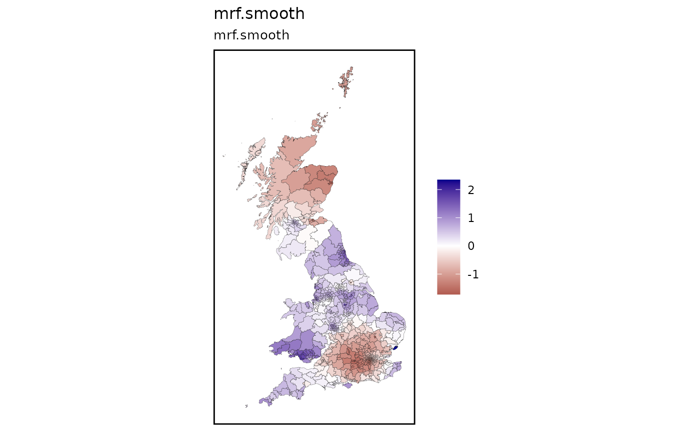

Visualise the predictions generated by the `st_augment()` function
Source:R/st_quickmap_preds.R
st_quickmap_preds.RdVisualise the predictions generated by the `st_augment()` function
Usage
st_quickmap_preds(
output,
scale_low = "firebrick4",
scale_mid = "white",
scale_high = "darkblue",
scale_midpoint = 0,
borderwidth = 0.05,
bordercol = "black",
legendlimits = "individual",
titlesize = 12,
subtitlesize = 10,
framefill = "white",
frameline = "black",
framesize = 1
)Arguments
- output
an augmented `sf` dataframe produced by `st_augment()`.
- scale_low
fill of lowest extreme of scale.
- scale_mid
fill of midpoint of scale.
- scale_high
fill of highest extreme of scale.
- scale_midpoint
value of midpoint of scale.
- borderwidth
linewidth of borders between units.
- bordercol
colour of borders between units.
- legendlimits
default `"individual"`. legend of each plot scaled within its own limits. `"minmax"` means all plot have common legend limits according to the global min-max.
- titlesize
font size for title.
- subtitlesize
font size for subtitle.
- framefill
colour for background fill.
- frameline
colour for frame.
- framesize
line width of frame.
Examples
prepdata <- st_bridges(uk_election,"constituency_name")
mgcv::gam(health_not_good ~
s(constituency_name, bs='mrf', xt=list(nb=prepdata$nb), k=100), data=prepdata, method="REML") |>
st_augment(uk_election) |>
st_quickmap_preds()
#> [[1]]

#>